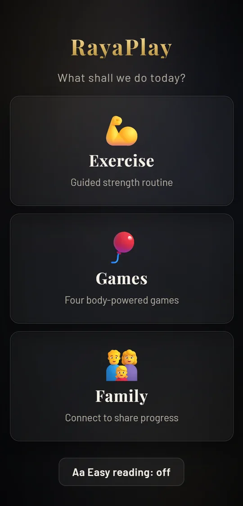
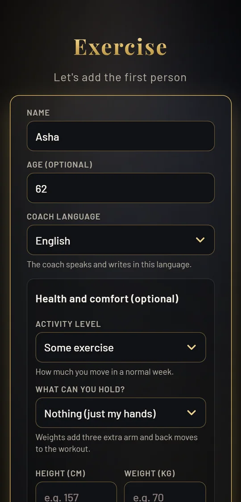
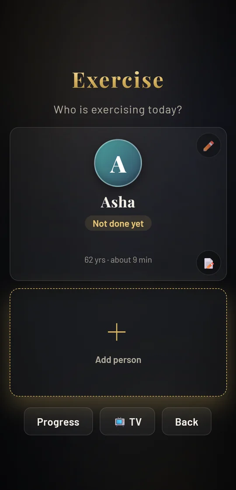
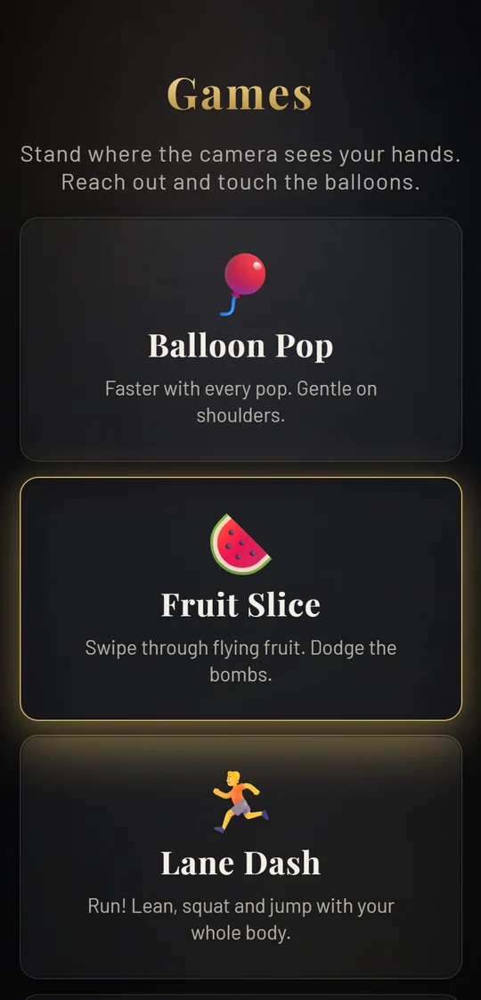
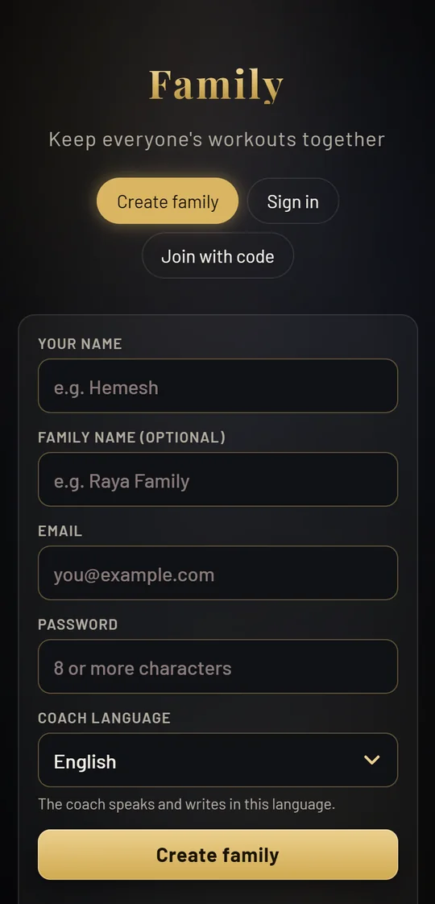

RayaPlay
Your phone watches you move, counts reps, corrects form and coaches in English or Telugu. An LLM can propose plans, but a safety rulebook always has the last word.

Watch it work
Press play, or jump to a chapter.
Screen recording of the real app on a phone-sized screen. The camera preview is hidden and no person is in view, so the coach waits instead of counting reps.
Chapters
The problem
Older relatives and children rarely stick to a workout alone, and generic plans ignore age, joints and health conditions. Free-text health notes are hard to turn into safe rules.
What I built
Pose tracking runs in the browser to count reps and check form, while a rulebook limits every plan. An LLM is only asked about notes the rulebook cannot parse, and its answer is checked by the same rules.
What it does
Pose-based coaching
MediaPipe tracking, a rep detector, form checks and a coach that observes and speaks.
Gentler variants
A lower press, a chair squat and fully seated routines, chosen from the health profile.
Body-controlled games
Balloon Pop, Fruit Slice, Lane Dash and Fruit Duel, driven by pose and hand tracking.
English and Telugu
Spoken lines pre-recorded with neural voices, so the coach works without a network call.
Family and TV mode
Progress shared between phones, and a big-screen view of the workout.
Installable
A PWA with a service worker, and Android packaging drafted as a Trusted Web Activity.
How the pieces fit
The dashes show the direction of data flow.
Coaching on the phone
Safety: the LLM proposes, the rulebook disposes
Real screens
Tap any screenshot to enlarge it. All data shown is invented.




Choices that matter
Rules only ever tighten limits
The most cautious rule always wins, no matter how many rules apply.
Validate the model with code
The LLM returns strict JSON. The proposal is checked by the same code as every plan, and can say "see a doctor first".
Video never leaves the phone
Pose tracking happens in the browser. The server only sees workout results and TV state.
Validated TV messages
The server validates every phone message with a strict parser, and the TV shows it as plain text.
Pre-recorded voice
Clips are generated once, which keeps the app fast and working offline.
How I know it works
The safety-critical parts are checked in four different ways.
Independent oracle
A second statement of the safety rules, written from the plain-language spec. Random people and plans are checked against both.
Mutation checks
Safety code is broken on purpose, one change at a time. If no test notices, a test is missing.
Model comparison
A script scores different models on made-up health notes with the same checks the app uses.
Hundreds of tests
Rep detection, health rules, voice, the TV protocol and server security.
Where it stands
I would rather be precise than impressive.
Built
- Pose-based coaching with six exercises
- Four games, English and Telugu voice
- Family sync and TV mode
- Safety rulebook plus a guarded LLM planner
In progress / verified by
- Verified by the oracle, mutation checks, model comparison and a large test suite
Honest limits
- Live coaching screens are not shown because they need a person in front of the camera
- Android store packaging is drafted, not released